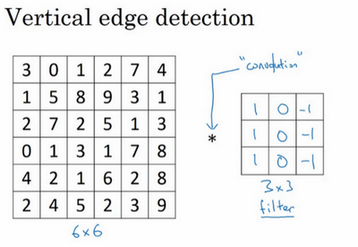
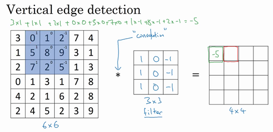
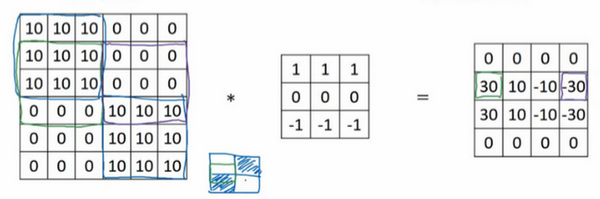

卷积神经网络基础
计算机视觉
计算机视觉是一个飞速发展的一个领域，这多亏了深度学习
深度学习与计算机视觉可以帮助汽车，查明周围的行人和汽车，并帮助汽车避开它们
还使得人脸识别技术变得更加效率和精准，已经能够体验到仅仅通过刷脸就能解锁手机或者门锁
有些公司在应用上使用了深度学习技术来展示最为生动美丽以及最为相关的图片
机器学习甚至还催生了新的艺术类型
深度学习之所以让人兴奋有下面两个原因：
- 计算机视觉的高速发展标志着新型应用产生的可能，这是几年前，人们所不敢想象的。通过学习使用这些工具，你也许能够创造出新的产品和应用
即使到头来未能在计算机视觉上有所建树，但我发现，人们对于计算机视觉的研究是如此富有想象力和创造力，由此衍生出新的神经网络结构与算法，这实际上启发人们去创造出计算机视觉与其他领域的交叉成果
举个例子，之前我在做语音识别的时候，经常从计算机视觉领域中寻找灵感，并将其应用于我的文献当中 所以即使在计算机视觉方面没有做出成果，也希望你也可以将所学的知识应用到其他算法和结构

你可能早就听说过 图片分类 ，或者说 图片识别 。比如给出这张64×64的图片，让计算机去分辨出这是一只猫
在计算机视觉中有个问题叫做 目标检测
比如在一个无人驾驶项目中，不一定非得识别出图片中的物体是车辆，但需要计算出其他车辆的位置，以确保自己能够避开它们
所以在目标检测项目中，首先需要计算出图中有哪些物体，比如汽车，还有图片中的其他东西，
再将它们模拟成一个个盒子，或用一些其他的技术识别出它们在图片中的位置
注意在这个例子中，在一张图片中同时有多个车辆，每辆车相对与你来说都有一个确切的距离

还有一个更有趣的例子，就是神经网络实现的 图片风格迁移
所谓图片风格迁移，就是你有一张满意的图片和一张风格图片
实际上右边这幅画是毕加索的画作，而你可以利用神经网络将它们融合到一起，描绘出一张新的图片
它的整体轮廓来自于左边，却是右边的风格，最后生成下面这张图片
但在应用计算机视觉时要面临一个挑战，就是 数据的输入可能会非常大
举个例子，在过去的课程中，一般操作的都是64×64的小图片
实际上，它的数据量是64×64×3，因为每张图片都有3个颜色通道
如果计算一下的话，可得知数据量为12288，所以特征向量 x 维度为12288
这其实还好，但是64×64真的是很小的一张图片
如果要操作更大的图片，比如一张1000×1000的图片，它足有1兆那么大，但是特征向量 \(x\) 的维度达到了 \(1000 \times 1000 \times 3\) ，因为有 3个 RGB 通道，所以数字将会是300万

这就意味着，特征向量 \(x\) 的维度高达300万。所以在第一隐藏层中，也许会有1000个隐藏单元，而所有的权值组成了矩阵 \(W^{[1]}\) 。如果使用了标准的全连接网络，这个矩阵的大小将会是\(1000 \times 300\) 万。这意味着矩阵会有30亿个参数，这是个非常巨大的数字。在参数如此大量的情况下：
- 难以获得足够的数据来防止神经网络发生过拟合和竞争需求
- 要处理包含30亿参数的神经网络，巨大的内存需求让人不太能接受
但对于计算机视觉应用来说，肯定不想它只处理小图片，希望它同时也要能处理大图
为此，需要进行卷积计算，它是卷积神经网络中非常重要的一块
接下来先用边缘检测的例子来说明卷积的含义
边缘检测
卷积运算 是卷积神经网络最基本的组成部分，使用边缘检测作为入门样例

之前讲过神经网络的前几层是如何检测边缘的
后面的层有可能检测到物体的部分区域
更靠后的一些层可能检测到完整的物体
这个例子中就是人脸

给了这样一张图片，让电脑去搞清楚这张照片里有什么物体，可能做的第一件事是检测图片中的垂直边缘
比如说，在这张图片中的栏杆就对应垂直线，与此同时，这些行人的轮廓线某种程度上也是垂线，这些线是垂直边缘检测器的输出
同样，可能也想检测水平边缘，比如说这些栏杆就是很明显的水平线，它们也能被检测到
所以如何在图像中检测这些边缘？
假设这是一个 \(6 \times 6\) 的灰度图像。因为是灰度图像，所以它是\(6 \times 6 \times 1\) 的矩阵，而不是 \(6 \times 6 \times 3\) 的，因为没有RGB三通道。为了检测图像中的垂直边缘，可以构造一个 \(3 \times 3\) 矩阵。在共用习惯中，在卷积神经网络的术语中，它被称为 过滤器 。这个 \(3 \times 3\) 的过滤器，类似这样
\begin{bmatrix} 1 & 0 & -1 \\ 1 & 0 & -1 \\ 1 & 0 & -1 \end{bmatrix}在论文它有时候会被称为 核 ，而不是过滤器
对这个 \(6 \times 6\) 的图像进行卷积运算，卷积运算用 \(\ast\) 来表示，用 \(3 \times 3\) 的过滤器对其进行卷积：

关于符号表示，有一些问题，在数学中 * 就是卷积的标准标志
但是在Python中，这个标识常常被用来表示乘法或者元素乘法
所以这个 * 有多层含义，它是一个重载符号

这个卷积运算的输出将会是一个 \(4 \times 4\) 的矩阵，可以将它看成一个\(4 \times 4\) 的图像。下面来说明是如何计算。为了计算第一个元素，在 \(4 \times 4\) 左上角的那个元素，使用 \(3 \times 3\) 的过滤器，将其覆盖在输入图像。首先进行元素乘法 element-wise products 运算
\begin{equation} \begin{bmatrix} 3 \times 1 & 0 \times 0 & 1 \times -1 \\ 1 \times 1 & 5 \times 0 & 8 \times -1 \\ 2 \times 1 & 7 \times 0 & 2 \times -1 \\ \end{bmatrix} = \begin{bmatrix} 3 & 0 & -1 \\ 1 & 0 & -8 \\ 2 & 0 & -2 \end{bmatrix} \end{equation}再将该矩阵每个元素相加得到最左上角的元素，即：
\begin{equation} 3 + 1 + 2 + 0 + 0 + 0 + (-1) + (-8) + (-2) = -5 \end{equation}
把这9个数加起来得到-5
当然，可以把这9个数按任何顺序相加
这里只是先写了第一列，然后第二列，第三列
接下来，为了弄明白第二个元素是什么，要把蓝色的方块，向右移动一步，像这样，把这些绿色的标记去掉：

继续做同样的元素乘法，然后加起来，所以是 \(0 \times 1 + 5 \times 1 + 7 \times 1 + 1 \times 0 + 8 \times 0 + 2 \times 0 + 2 \times (-1) + 9 \times (-1) + 5 \times (-1) = -4\)

接下来也是一样，继续右移一步，把9个数的点积加起来得到0：

继续移得到8：

接下来为了得到下一行的元素，现在把蓝色块下移，现在蓝色块在这个位置：

重复进行元素乘法，然后加起来。通过这样做得到-10。再将其右移得到-2，接着是2，3。以此类推，这样计算完矩阵中的其他元素：

-16是通过底部右下角的3×3区域得到的
因此 \(6 \times 6\) 矩阵和 \(3 \times 3\) 矩阵进行卷积运算得到 \(4 \times 4\) 矩阵。这些图片和过滤器是不同维度的矩阵，但左边矩阵容易被理解为一张图片，中间的这个被理解为过滤器，右边的图片可以理解为另一张图片。这个就是 垂直边缘检测器
如果要使用编程语言实现这个运算，不同的编程语言有不同的函数，而不是用 * 来表示卷积
如果在tensorflow下，这个函数叫tf.conv2d
在Keras这个框架，用Conv2D实现卷积运算
所有的编程框架都有一些函数来实现卷积运算

这是一个简单的6×6图像，左边的一半是10，右边一般是0。如果把它当成一个图片，左边那部分看起来是白色的，像素值10是比较亮的像素值，右边像素值比较暗，使用灰色来表示0，尽管它也可以被画成黑的。图片里，有一个特别明显的垂直边缘在图像中间，这条垂直线是从黑到白的过渡线，或者从白色到深色

当用一个 \(3 \times 3\) 过滤器进行卷积运算的时候，这个过滤器可视化为下面这个样子，在左边有明亮的像素，然后有一个过渡，0在中间，然后右边是深色的。卷积运算后，得到的是右边的矩阵：

如果把最右边的矩阵当成图像，它是这个样子。在中间有段亮一点的区域，对应检查到这个 \(6 \times 6\) 图像中间的垂直边缘
这里的维数似乎有点不正确，检测到的边缘太粗了
因为在这个例子中，图片太小了
如果用一个1000×1000的图像，而不是6×6的图片，会发现其会很好地检测出图像中的垂直边缘
在这个例子中，在输出图像中间的亮处，表示在图像中间有一个特别明显的垂直边缘
从垂直边缘检测中可以得到的启发是，因为 使用 \(3 \times 3\) 的矩阵（过滤器），所以垂直边缘是一个 \(3 \times 3\) 的区域，左边是明亮的像素，中间的并不需要考虑，右边是深色像素。在这个 \(6 \times 6\) 图像的中间部分，明亮的像素在左边，深色的像素在右边，就被视为一个垂直边缘
卷积运算提供了一个方便的方法来发现图像中的垂直边缘
更多例子

现在这幅图有什么变化呢？它的颜色被翻转了，变成了左边比较暗，而右边比较亮。现在亮度为10的点跑到了右边，为0的点则跑到了左边。如果用它与相同的过滤器进行卷积，最后得到的图中间会是-30，而不是30。如果将矩阵转换为图片，就会是该矩阵下面图片的样子。现在中间的过渡部分被翻转了，之前的30翻转成了-30，表明是由暗向亮过渡，而不是由亮向暗过渡
如果不在乎这两者的区别，可以取出矩阵的绝对值 但这个特定的过滤器确实可以为我们区分这两种明暗变化的区别
再来看看更多的边缘检测的例子，已经见过这个 \(3 \times 3\) 的过滤器，它可以检测出垂直的边缘。所以，看到右边这个过滤器，应该猜出来了，它能让你检测出水平的边缘。提醒一下，一个垂直边缘过滤器是一个 \(3 \times 3\) 的区域，它的左边相对较亮，而右边相对较暗。相似的，右边这个水平边缘过滤器也是一个 \(3\times 3\) 的区域，它的上边相对较亮，而下方相对较暗：

还有个更复杂的例子，左上方和右下方都是亮度为10的点。如果将它绘成图片，右上角是比较暗的地方，这边都是亮度为0的点，把这些比较暗的区域都加上阴影。而左上方和右下方都会相对较亮。如果用这幅图与水平边缘过滤器卷积，就会得到右边这个矩阵

再举个例子，这里的30（右边矩阵中绿色方框标记元素）代表了左边这块3×3的区域（左边矩阵绿色方框标记部分），这块区域确实是上边比较亮，而下边比较暗的，所以它在这里发现了一条正边缘。而这里的-30（右边矩阵中紫色方框标记元素）又代表了左边另一块区域（左边矩阵紫色方框标记部分），这块区域确实是底部比较亮，而上边则比较暗，所以在这里它是一条负边。

再次强调，现在所使用的都是相对很小的图片，仅有6×6 但这些中间的数值，比如说这个10（右边矩阵中黄色方框标记元素）代表的是左边这块区域（左边6×6矩阵中黄色方框标记的部分） 这块区域左边两列是正边，右边一列是负边，正边和负边的值加在一起得到了一个中间值 但假如这个一个非常大的1000×1000的类似这样棋盘风格的大图，就不会出现这些亮度为10的过渡带了，因为图片尺寸很大，这些中间值就会变得非常小
总而言之，通过使用不同的过滤器，可以找出垂直的或是水平的边缘。但事实上，对于这个 \(3 \times 3\) 的过滤器来说，只使用了其中的一种数字组合

但在历史上，在计算机视觉的文献中，曾公平地争论过怎样的数字组合才是最好的，所以还可以使用这种：
\begin{bmatrix} 1 & 0 & -1 \\ 2 & 0 & -2 \\ 1 & 0 & -1 \end{bmatrix}这叫做 Sobel 的过滤器，它的优点在于增加了中间一行元素的权重，这使得结果的鲁棒性会更高一些
但计算机视觉的研究者们也会经常使用其他的数字组合，比如这种：
\begin{bmatrix} 3 & 0 & -3 \\ 10 & 0 & -10 \\ 3 & 0 & -3 \end{bmatrix}这叫做 Scharr 过滤器，它有着和之前完全不同的特性，实际上也是一种垂直边缘检测 如果将其翻转90度，就能得到对应水平边缘检测
随着深度学习的发展，学习的其中一件事就是当真正想去检测出复杂图像的边缘，不一定要去使用那些研究者们所选择的这九个数字，但可以从中获益匪浅。把这矩阵中的9个数字当成9个参数，并且在之后你可以学习使用反向传播算法，其目标就是去理解这9个参数

当你得到左边这个6×6的图片，将其与这个 \(3 \times 3\) 的过滤器进行卷积，将会得到一个出色的边缘检测
这种过滤器对于数据的捕捉能力甚至可以胜过任何之前这些手写的过滤器 相比这种单纯的垂直边缘和水平边缘，它可以检测出45°或70°或73°，甚至是任何角度的边缘 所以将矩阵的所有数字都设置为参数，通过数据反馈，让神经网络自动去学习 还会发现神经网络可以学习一些低级的特征，例如这些边缘的特征 不过构成这些计算的基础依然是卷积运算，使得反向传播算法能够让神经网络学习任何它所需要的3×3的过滤器，并在整幅图片上去应用它